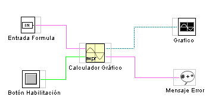

Generador de Grafico
| Este Elemento permite calcular los puntos de una curva cuya ecuacion le introducimos a traves del objeto de "entrada de texto" | En la figura podemos ver una sencilla aplicación en la que interviene este elemento. La pantalla de la figura muestra el resultado. |
|  | |
|